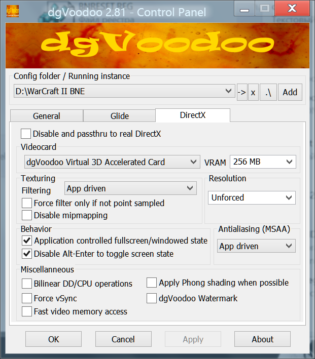
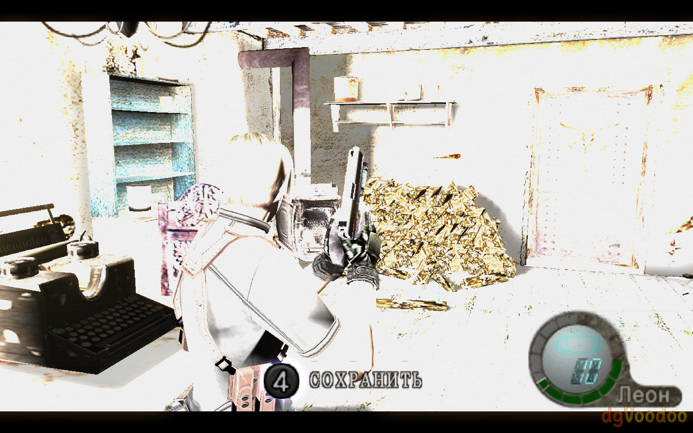
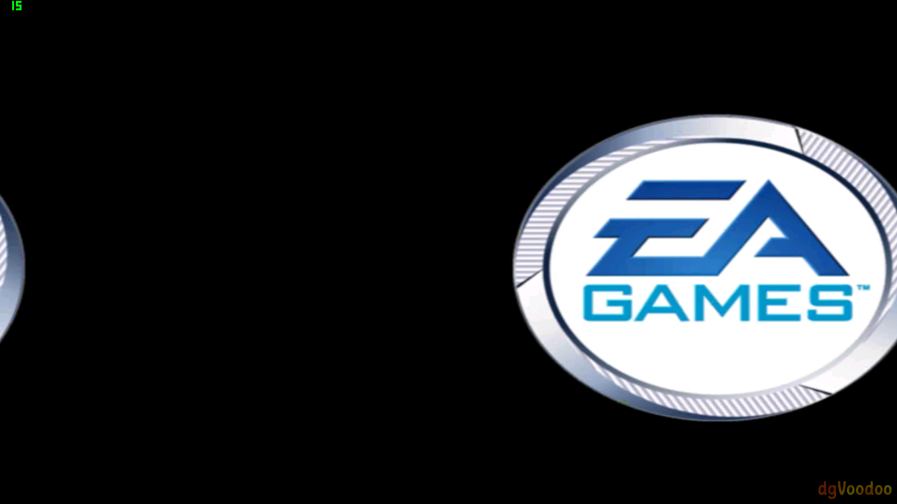

Улучшаем старые игры при помощи DgVoodoo 2
В двух словах DgVoodoo - это эмулятор старых видеокарт. Очень полезная программа, которую можно и нужно использовать не только на планшетах, но и на стационарных ПК. Она исправляет косяки старых игр и улучшает их произаводительность на современных ОС. Например игра Bloodrayne (да, можно просто скачать версию Terminal Cut, которая отлично работает сама по себе, но она весит в разы больше оригинала), она неприлично лагает, даже на минимальных настройках графики. DgVoodoo делает так, чтобы она летала на максимальных настройках графики в 60 кадров. Или игра Panzer Elite Action, в ней не крутятся гусеницы танка, а ещё она зависает после каждой выполненной миссии. DgVoodoo всё это исправляет. И последний пример - игра Mageslayer. Она умеет работать в DirectX и выглядит с ним очень красиво, но его нельзя включить в настройках на современной видеокарте, оставляя вас довольствоваться софтварным режимом в разрешении 640x480 и 16 бит цветности... DgVoodoo снова спешит на помощь и с ним можно выбрать DirectX в настройках игры и максимальное разрешение 1024х768 с цветностью 32 бита.
Скачать последнюю версию программы можно здесь.
Кроме того, данная программа может выступить в роли DirectX враппера, а также она умеет эмулировать 3Dfx Glide, который в те бородатые времена выглядел получше только-только зарождавшегося DirectX.
Данную программу не нужно устанавливать. Всё что вам нужно, так это скопировать в папку с игрой, там где находится исполняемый файл игры, файл dgVoodooCpl.exe и все файлы из папки MS\x86. Если же вам нужно эмулировать Glide, то соответсвенно вместо папки MS\x86 вам нужно скопировать все файлы из папки 3Dfx\x86. Битность здесь выбирается не исходя из процессора в вашем планшете/компьютере, а исходя из битности самой игры. Далее давайте разберём настройки. Во вкладке General ничего интересного нет, там вы можете разве что настроить запуск игры в окне, выбрать нужную видеокарту если у вас ноутбук с внешней видеокартой и произвести цветокоррекцию игры, если вам это вдруг нужно. Перейдём во вкладку DirectX, но прежде всего нажмите на кнопку .\ возле пути к конфигурационному файлу сверху, данная кнопка создаст в папке с игрой отдельный конфигурационный файл, иначе DgVoodoo будет использовать один общий конфиргурационный файл для всех игр.
Настройка DirectX в dgVoodoo
Disable and passthru to real DirectX - отключает работу dgVoodoo, если вам нужно не удалять его файлы из папки с игрой, но нужно отключить его работу.
Videocard - здесь вы выбираете какую видеокарту нужно эмулировать. Зачастую можно оставлять всё как есть, но в случае с какими-нибудь графическими артефактами в игре попробуйте разные варианты. К примеру, в игре Resident Evil 4 сломалось освещение со стандартной видеокартой dgVoodoo Virtual 3D Accelerated Card, выбрав какую-то другую из списка стало получше, но освещение в игре всё равно было поломанным. К сожалению с некоторыми играми dgVoodoo не дружит и RE4 одна из таких игр.
VRAM - указывает какой объём видеопамяти нужно эмулировать. Зачастую стандартных 256 МБ достаточно для большинства игр, однако если игре этого будет мало, то нужно будет выбрать большее количество видеопамяти. Узнать сколько игре требуется видеопамяти можно, например, на странице данной игры в Steam, в её системных требованиях. Каким-то играм, возможно, потребуется меньше 256-ти мегабайт видеопамяти, но я таких не встречал, однако имейте это в виду.
Texture filtering - это сглаживание текстур, делает изображение чётче. Выбирайте на свой вкус.
Resolution - это разрешение. Можно не менять, а можно выбрать разрешение вашего экрана, тут снова на ваше усмотрение.
Application controlled fullscreen/windowed state - если снять эту галочку, то тогда на вкладке General вы сможете выбрать оконный режим для игры.
Disable Alt-Enter to toggle screen state - используется в случае если у игры есть свой собственный механизм переключения между полноэкранным и оконным режиимами по нажатию Alt + Enter, данная галочка включит использование собственного механизма DgVoodoo, для предотвращения конфликтов.
Antialiasing (MSAA) - это анизатропная фильтрация, она же антиаллиасинг.
Force vSync - принудительно включает вертикальную синхронизацию, даже если игра не поддерживает её. Читал что данная функция частенько ломает игры, поэтому сам не использую её. Ну и, само собой, в 2D играх это ничего не даст...
Fast video memory access - это быстрый доступ к видеопамяти. Включаю всегда, однако сам DgVoodoo говорит что использовать эту функцию следует только если вы сталкиваетесь с низкой производительностью. Например, в игре Command & Conquer: Red Alert 2, при разрешении 800х600 и выше, прокрутка карты вызывает лаги в игре, а данная функция это устраняет.
dgVoodoo Watermarl - включает водяной знак с логотипом dgVoodoo в нижнем-правом углу экрана. Нужно только для того, чтобы убедиться что DgVoodoo работает (на скриншоте с Resident Evil 4 можно увидеть пример).
В программе имеются и продвинутые настройки, которые можно настраивать только в конфигурационном файле dgVoodoo.conf, который автоматически создаётся в папке с игрой, после того как вы сохранили настройки в программе. Разбирать их мы не будем, так как я сам в них не разбираюсь, однако есть одна настройка, которая пригодится нам на планшетах чтобы использовать dgVoodoo вместе с GestureWorks Gameplay или с Comfort Keys Pro. Без этой настройки работать они в паре с DgVoodoo не будут. Открывайте файл dgVoodoo.conf при помощи Блокнота и ищите в нём следующее:
DesktopResolution =
DesktopBitDepth =
DeframerSize = 1
ImageScaleFactor = 1
CursorScaleFactor = 0
DisplayROI =
Resampling = bilinear
PresentationModel = auto
ColorSpace = appdriven
FreeMouse = false
WindowedAttributes =
FullscreenAttributes =
FPSLimit = 0
Environment =
SystemHookFlags = Нам нужно вписать значение fake в строку FullscreenAttributes. Должно получиться вот так:
DesktopResolution =
DesktopBitDepth =
DeframerSize = 1
ImageScaleFactor = 1
CursorScaleFactor = 0
DisplayROI =
Resampling = bilinear
PresentationModel = auto
ColorSpace = appdriven
FreeMouse = false
WindowedAttributes =
FullscreenAttributes = fake
FPSLimit = 0
Environment =
SystemHookFlags = После этого игра будет запускаться в оконном безрамочном режиме, в котором GestureWorks Gameplay и Comfort Keys Pro отлично работают. Однако стоит отметить, что не все игры будут корректно работать в окне. Больше всего страдают 2D игры, зачастую их движки не писались с расчётом на оконный режим отображения. Например, WarCraft II Battle.NET Edition после данных манипуляций хоть и работает, однако у него сбиваются координаты курсора мыши. При касании экрана реальное нажатие происходит значительно ниже и правее пальца. Или игра Command & Conquer: Red Alert 2. Изображение на вступительных заставках начинает как бы двоиться, а главное меню игры и вовсе зависает.
